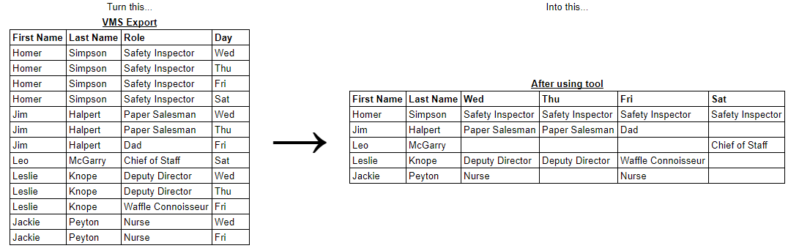

If you are happy with the preview, click Download CSV.

All data processing happens on your computer and is never sent to a server. No worries about PII here! Just remember that the file you download from here contains PII, just like the export from VMS.